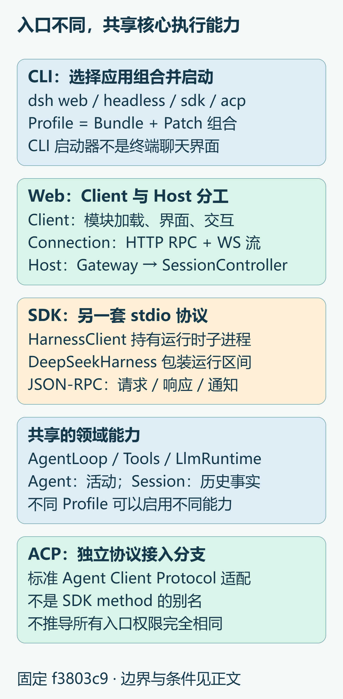
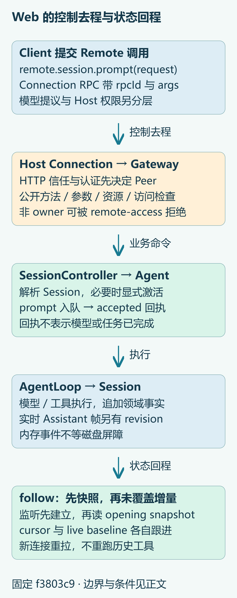
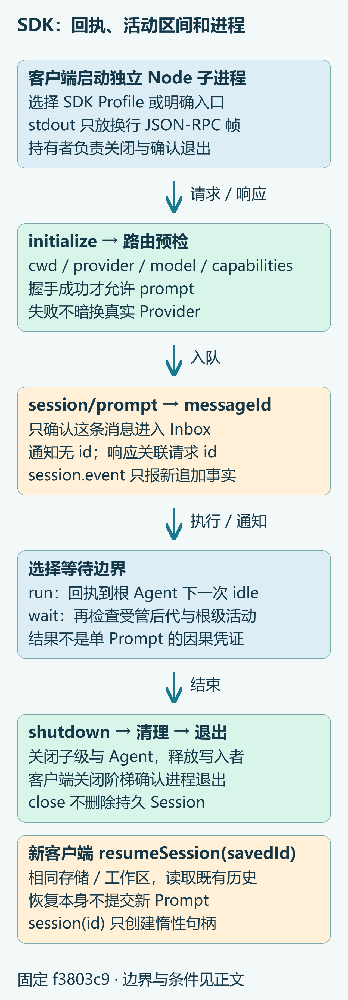
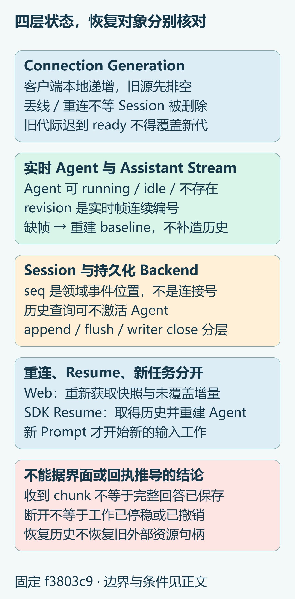

H23 作者审阅页 · 未发布。实际 LessonMarkdown 的静态渲染，折叠答案可展开；课程版本的复制交互已另经 React 挂载测试。图片在本页映射为相邻文件，不改变教材的 /course-media 路径。
CLI、Web UI、SDK 与远程通信
230～310 分钟（分三段；作者估计，环境准备与真实试读另计）
同一份报告，换一个入口会怎样？
项目助手已经能委派调查、编排工作流，也知道后台任务结束不等于原脚本可以跨重启恢复。现在让它处理同一份虚构材料：“三个模块，其中两个有测试；请概括架构与测试缺口。”同事想在网页里提问，开发者想在命令行运行，自动化程序则希望从 TypeScript 收到结果。
这不需要三份 AgentLoop。但要回答三个新问题：谁把输入送进去，谁消费状态，谁负责关闭？ 网页显示正在回答时，服务器可能还没结算完整消息；SDK 已返回 messageId 时，模型可能仍在门闩后等待；页面重连后，也不该把历史里的文件写入工具重新执行一遍。
Carrier（载体）是围绕领域能力组织交互、进程及传输的应用入口。可以把它理解为同一业务的不同柜台，但柜台类比不能推出相同权限、相同协议或同一连接。固定版本中，CLI 启动具名 Profile，Web Client 经 Host Remote 服务交互，SDK 则持有一个运行时子进程并使用另一套 JSON-RPC。共享的是按组合启用的核心能力，不是所有入口表面完全一致。S01 · parseDshArgs S05 · runProfile S33 · resolveDshLaunch
本课按正式蓝图标题《CLI、Web UI、SDK 与远程通信》展开，产出是一条控制链、一条订阅链和一份失败归因表。H24才把各模块整合成大型系统证据审查；本课不重写UI、不接用户账户、不提前开展集中审查。
六分钟接回已有的执行主线
H03告诉我们：输入进入Inbox，AgentLoop驱动Turn/Step，模型提议工具，Host执行并把结果交回。H09–H10又分清运行Agent、Handle所有权、队列和idle。H17–H18说明Session是事实来源，内存append、路由flush、后端确认及writer.close各有边界；读取旧事实不重做外部动作。
H04/H08已经介绍Profile、Bundle、Patch和Loader：应用组合选择哪些插件，运行注入决定服务是否存在，配置更新/HMR不等于整机重启。H21/H22增加子级、WorkflowRun、Job、Goal和Schedule；它们的句柄、取消所有者与持久状态，不能因为客户端断开就自动合并成“都结束了”。
Stage2的HTTP请求/响应、Stage3的流式取消和Stage4的能力边界提供直觉。无须打开旧课即可理解这里的区别：请求用于提出控制，响应说明本次调用结果，通知传递无需单次响应的状态，历史用于重建已记录事实。拥有旧课权限者可选回看 HTTP基础、流式状态、能力组合，不假定新课赋予旧课权限。
CLI 先选择应用，再由应用解释自己的参数
dsh 是启动器，不能把它描述成仓库保证存在的交互终端聊天UI。它解析Profile、额外Patch与配置查看；遇到第一段不属于启动器的输入后，把余下参数原样交给应用插件。dsh web是dsh --profile web的简写；某个参数出现在命令中，不证明启动器已理解它。S01 · parseDshArgs
dsh --profile web --patch ./extra.yml --port 9123这里先选择web并记录extra.yml，--port 9123交给Web应用。若改成dsh web --port 9123 --patch ./extra.yml，后面的patch也属于应用参数，不能凭位置之外的名字强行归回启动器。配置dump没有启动应用，因而拒绝附加应用参数；它不能假装替应用解释端口后再展示另一棵树。实践A用独立解析进程验证这两层。S01 · parseDshArgs S02 · runCli
| 入口 | 选择的应用形态 | 不能据名称推出什么 |
|---|---|---|
| dsh web | 浏览器页面与Host服务 | CLI本身不是聊天界面 |
| dsh --profile headless | 一次任务、输出与退出 | 不等于SDK长驻协议会话 |
| dsh --profile sdk | base与SDK应用组合 | 不保证与Web启用相同工具 |
| dsh --profile sdk-minimal | 显式最小完整SDK组合 | 不是默认再叠一遍base |
| dsh --profile acp | ACP协议应用 | 不是SDK方法换了前缀 |
Profile是应用能力组合，Bundle提供一层有序插件Patch。固定启动流程读取Bundle层、Profile用户层、Home层和显式覆盖，再交Loader；cmdlineArgs是内层共享的不可变参数快照。不同层的config按真实Patch操作整体替换，不自动深合并。--dump-config成功只证明配置诊断完成，不证明Agent或客户端已就绪；非法Profile名、坏配置、依赖导入、服务启动失败应分别定位。S03 · homePatchPath S04 · prepareProfile S05 · runProfile S06 · resolveProfileDir / initProfile S07 · loadProfileDirectory / composeEntries S08 · sdk-minimal manifest
想深入再看：可选深读：启动就绪、HMR与本课的实验入口
H04建立启动地图，H08计算组合与运行树变化。本课只补载体增量：runProfile把启动器与应用的参数分开，AppReady在应用服务就绪后提交；不能把导入完成、Loader settled和业务可用当同一承诺。SDK插件在initialize时等待可用Loader.await；本课先让作者Profile的空配置settled，再挂SDK与握手。若手工Context没有Loader则直接进入服务握手，不能混算为Profile启动已验。
实践A在新Home写一个空Bundle列表的Profile，再运行正式CLI的配置dump与不存在Profile的失败出口。它没有启动五种发行Profile。SDK实验用真实CLI parser检查sdk-minimal选择语法，随后明确改用隔离作者Profile：loadProfileDirectory读取空Bundle/空Patch，boot以prepare装入Mock核心，等待真实Loader的空配置就绪，再装正式SDK服务；没有运行发行版sdk-minimal、完整Web UI、真实Provider和多种工具。不能因为选择语法相同就宣称发行Profile端到端通过。 S54 · bootS05 · runProfile S46 · SDK plugin apply
图一先区分“谁启动”与“谁交互”，再找共享核心。

第一段停点，约60～80分钟： 完成A，交一条命令的两段参数和一份配置结果。合上源码说明为什么CLI、Profile、交互UI是三个不同对象，再进入Web控制与订阅。
Web Client 不在浏览器里复制一套 Host
Host实际拥有Agent、Session、模型与工具后端；Client组织界面和交互；Connection负责载体通信和连接恢复；Remote API公开有边界的业务方法。SessionController则是Host会话业务适配器，把创建、Prompt、历史、状态与取消连接到领域对象。UI隐藏一个按钮只改变展示，不会使后端请求自动失效。S25 · SessionController init S24 · RemoteAccessService.decide
先装客户端模块，再显示工作界面
AppWebEntry先绘制BootPage，等待引导信息，建立Client Module系统，预取立即层，调用bootClient激活插件，再mountClient挂载UI。模块图解决哪些代码能同步解析，Cordis inject解决运行时服务条件，两者不能混成一张依赖表。初始化失败通过BootPage或调用方onFailure展示，不能把无提示白屏当作完成状态。UI Renderer、UI Session与Conversation消费既有领域数据，本课不要求重学全部React实现。S09 · AppWebEntry S10 · Client modules S11 · mountClient
从按钮意图到明确公开的方法
面向客户端的调用形式可以写成ctx.remote.session.prompt(request)；前提是该Client组合已装载相应公开Remote贡献。它不是“拿到ctx就可调用Host任意Service”。Typert的描述与codec约束公开方法和参数，Gateway按namespace/method分派，解析资源和上下文，再调用被标记的方法。应用选择的Cordis事件源也需要显式交给Gateway转发，运行时事件名不会自动变成网络消息。S18 · prepareInvocation S20 · assertExactArguments / validateArguments / decode S22 · Client Remote projection S23 · API Remotes
Web普通调用的线路是HTTP POST应用RPC：客户端构造type/rpcId/method/payload，Remote载荷内有args，Host返回相关联的结果包络。长流由Gateway的WebSocket复用通道/api/remote.mux承载。不是所有Web调用都走WebSocket，也不是SDK JSON-RPC 2.0。 本课B的真实Client RPC校包络与关联ID，但fetch和流承载由受控协作者接到正式Gateway，不拿它冒充真实浏览器网络握手。S15 · createWebConnectionRpc S19 · dispatchRpc / openWireStream S21 · Remote mux vocabulary
Host Connection先检查Host/Origin信任与浏览器认证，形成Peer（一次已接纳的通信身份与作用域）。知道地址不等于已认证。Gateway再查公开方法、精确命名参数与codec；对非owner，资源访问检查发生在lookup解析与业务调用之前，拒绝不应为了查资源而启动Agent。RemoteAccess按principal、action与每个resource的绑定决定，策略异常也是拒绝；实测拒绝码为remote-access/denied。S16 · Host Connection apply S17 · BrowserAuth S18 · prepareInvocation S24 · RemoteAccessService.decide
B的owner Peer是夹具明确建立的身份，不能推广成浏览器可自称owner。B2验证缺参数、业务互斥字段及非owner拒绝，未加载完整生成Schema门面或审计cookie/Origin所有路径；接口存在、按钮可见、后端允许与实际执行仍是四个问题。
Prompt回执与结果之间，还隔着一次真实执行
Web Prompt字段为requestId/sessionId/mode/content，mode区分queue与steer；接受后回{accepted:true}。SDK的session/prompt则是另一套字段与回执，不要混用。SessionController会解析目标Session，必要时通过Agent控制器恢复运行实体，再把输入交给Inbox。回执成功没有等待模型回答；取消回执也只是控制已接纳。S26 · ApiSessionAgentController S27 · SessionCommandController.create S28 · SessionController.prompt / cancel
图二分别顺着“去程”与“回程”读。不要把业务回执箭头画成最终报告。

重连恢复的是哪一层状态？
Generation（连接代际）是Client运行期内单调递增的有效连接编号。旧源断开后要取消、释放并结算，才能建立新源；迟到ready不能把新代际覆盖回旧Host。它不等于Session.seq，也不等于模型Attempt的实时revision。B4故意把旧源清理卡在门闩，证明第二源要等待；这不是测重连耗时。S12 · ConnectionHandle S13 · installConnection S14 · ConnectionController
Snapshot/Delta（快照/增量）解决“重连时已错过多少变化”。Session follow先装队列和监听，再读取一份opening snapshot，以cursor切掉已覆盖的历史增量，随后交未覆盖事件。可选assistantStream还带进程内实时Attempt baseline。默认follow不激活Agent；只有请求明确activate:true且满足普通Session等条件时，才保留观察lease做后台promotion。读取历史页可以完全不运行模型。S29 · WebController.follow S30 · HistoryController
实时Assistant revision要求连续。客户端在opening baseline之后收到rev1，再收到rev3，会把缺rev2识别成carrier错误并重新baseline；它不会假装rev2已到，也不会把实时编号当Session事件seq。B6使用正式SessionEventStream/RemoteStream，实际出版序列为replace、assistant-stream、replace，未把缺口帧拼入旧视图。业务事件cursor与实时revision各有归属。S31 · SessionAssistantStreamAccumulator S32 · SessionEventStream.follow
B5关闭原Context，再由新Context从真实JSONL读取历史页，Agent数和模型请求数都是0。这只证明这条被动点读路径；真实页面加载还可能显式请求激活，不能概括成“Web刷新永远不恢复Agent”。历史中已结算的工具结果用来重建展示，不应靠再次执行工具补界面。
第二段停点，约70～95分钟： 交B1的一份回执、一份snapshot、一条Session事实，再交B2拒绝和B4/B6重建轨迹。分别标Peer、Generation、cursor、revision，之后才进入stdio。
SDK：一个程序拥有另一个运行时进程
@deepseek-ai/dsh-sdk-client提供两层。HarnessClient负责进程、JSON-RPC请求、订阅和类型化错误；DeepSeekHarness包装路由握手、会话句柄和一次运行活动区间。SDK在Harness Context外直接spawn，不是Host内的Subprocess Service消费方。显式dshBin或同版本安装入口决定运行什么，profile与patch决定组合；env若提供则整体替换，凭据策略归调用者。S33 · resolveDshLaunch S34 · HarnessClient.start S35 · DeepSeekHarness S37 · RunResult / SDK options
下面用公开高层API；sdkHome/sdkOptions是本课夹具辅助函数，只返回新目录、Mock路由和明确入口，不是官方API。
const home = await sdkHome()
const harness = new DeepSeekHarness(sdkOptions(home))
try {
const result = await harness.run('Inspect fictional facts', { sessionId: 'review' })
console.log(result.sessionId, result.finalResponse)
} finally {
await harness.close()
}预期报告含modules=3; covered=2/3，最终close后子进程exitCode=0。真实业务示例不能省略finally，也不应将本课Mock名称当供应商模型ID。C1实际用公开dshBin选作者入口，正式Server/Protocol/Loop运行在独立Node中，stdio帧与PID在原始证据保留；完整发行Profile和真实模型仍未运行。
请求、响应和通知，先按帧区分
SDK使用换行分帧的JSON-RPC。请求带id和method；响应带同一个id与result或error；通知有method而无请求id。双方都能发请求，所以服务端可以请求审批或用户回答。stdio是一条字节流，不能按某次data回调恰好收到一行来写解析器；正式Transport负责缓冲、分行和关联。S39 · JsonRpcLineTransport S40 · HarnessSdkRequestMap / NotificationMap
{"jsonrpc":"2.0","id":"r1","method":"session/prompt","params":{"sessionId":"review","contentBlocks":[{"type":"text","text":"Inspect fixture"}]}}响应的result包含messageId，证明输入已排队，不是报告ID。session.event通知传一条新记录的Session事实，session.status报告Agent状态；恢复时不会把全部旧历史重新推成新通知。通知与同进程Cordis事件、实时chunk、完整历史查询都不是同一种消息。S38 · initialize / prompt / resumeSession S40 · HarnessSdkRequestMap / NotificationMap S42 · prompt / resume
固定Transport不是严格JSON-RPC规范验证器。语法坏行直接忽略，非对象params归成空对象；没有请求handler时是-32601，正式SDK Server已有handler但遇未知方法时抛错，由Transport映射-32603。本课D4验证不存在的session/cancel和坏参数，保留实际错误，不能根据标准名自行补一个-32700响应。stdout必须留给协议；普通日志混入可能使整行响应被丢弃或形成误识别帧，诊断应走stderr。S39 · JsonRpcLineTransport S44 · handleRequest
initialize、prompt、wait，各确认一次不同事实
initialize验证cwd、provider/model路线、可选输出上限及能力声明；握手成功前不接受正常Prompt。不存在的Mock Provider在D7明确失败并确认旧进程退出，再用正常配置的新Client/新PID成功跑完Mock任务，不暗换真实Provider凑通过。高层初始化与清理同时失败还有AggregateError分支，本课未注入该分支。S35 · DeepSeekHarness S41 · initialize
低层调用先订阅，再prompt拿messageId，随后可client.request('session/wait',{sessionId})等待。wait只观察已存在且由SDK拥有的Session；不为“等待一个ID”创建新Agent。它在根idle后还检查受管后代及根状态是否稳定，和高层run的活动区间终点不同。C2只动态测根工作门闩，受管后代细分支是静态阅读。S38 · initialize / prompt / resumeSession S43 · wait / ownsAgent
HarnessSession.run()先订阅会话树，等待自己的messageId出现在持久入队回执agent/inbox/spliced，从那里收集到根Agent下一次idle。返回RunResult {sessionId,finalResponse,events,notifications}，finalResponse取该区间最后提交的根助手文本。这里的“持久回执”指Session日志事实，仍不代表已经完成物理flush。S36 · HarnessSession.run S37 · RunResult / SDK options
C3先run('HOLD')，在模型门闩关闭时又低层prompt('SECOND_QUEUED')，再放行。最终响应来自SECOND_QUEUED，区间有两条助手消息。这是为什么run结果不能被解释为“严格只由刚发的Prompt导致”：steering、注入和排队工作都可能在下一次idle前参与。
图三把入队、活动、等待与关闭分开。

Resume、取消和关闭，别用一个动词概括
harness.session(id)只构造惰性句柄，没有线上的恢复请求；首个Prompt或工作目录操作可能创建未知Session。resumeSession(savedId)才初始化后发出session/resume，从所配存储恢复，并不自动提交新输入。必须保存正确Session ID，沿用对应存储根和工作区；缺失、不可读、不兼容、已打开或被别的writer占用时应拒绝，不偷偷新建替代会话。S35 · DeepSeekHarness S38 · initialize / prompt / resumeSession S42 · prompt / resume
D1让第一SDK进程写入并正常关闭，由另一PID恢复同一ID；resume之前/之后的协议帧证明尚未发新Prompt，新一轮模型请求能看到旧事实，真实JSONL历史前缀保持并增长。这里验证了正常关闭后的跨进程Resume，没有模拟突然崩溃、断电或恢复旧浏览器/Shell句柄。Session事件只从新追加处通知，不能把本进程事实观察数组长度当全部持久历史长度。
Web有session Remote cancel；SDK固定方法表没有轮次中取消方法。SDK实验在模型处理期间执行close，让Server停止所拥有Agent并保留已提交输入/中断终态。不要在SDK示例编造session/cancel，也不能说关闭一个Client等于撤回已发生的外部效果。S28 · SessionController.prompt / cancel S40 · HarnessSdkRequestMap / NotificationMap S45 · shutdown
close是幂等、终结性的：先尝试有界shutdown协议，随后走进程回收。Server关闭受管后代与拥有的Agent/Adapter，插件在响应后flush传输、dispose根运行时并退出。若协议关闭失败，客户端先给stdin EOF合作等待；POSIX再尝试可捕获SIGTERM，Windows不把该信号假装成合作阶段，最终都必须确认进程退出。强制终止分支不保证最后历史已flush；本课实测合作关闭exit0，没有把杀测试主进程当通过。S45 · shutdown S46 · SDK plugin apply S47 · HarnessClient.close / performClose S48 · disposeRuntimeProcess
双向请求：审批与用户回答都需要明确回程
启用approvalRequests:true前，客户端先start并安装client.onRequest(handler)，再让harness.start握手。属于SDK拥有Agent的审批可转为approval/request；回答只允许明确的allowed-once、rejected、cancelled等本版词汇。客户端没装回答者、回答错误或传输失败，不构成授权，服务端按unavailable等失败关闭。D6四种分支中，只有allowed-once令虚构效果计数从0变1；它不操作真实文件。S49 · SDK approval bridge
onUserQuestion是另一条类型化回调，接收原问题与AbortSignal，返回按问题ID组织的answers。启用后握手声明capabilities.userQuestions，服务端可发user-question/ask；请求取消时发送取消通知并放弃等待。SDK对回调与取消做race，忽略晚答；应用仍要用signal释放自身资源，SDK不会替任意不合作回调做业务回滚。D8真实stdio收答；D9故意晚回，关闭后signal已abort、进程退出，晚答不能复活原请求。S50 · SdkUserQuestionBridge S51 · client question dispatch
两条回程都要核实时Agent归属，不凭碰巧相同sessionId授权其他根对象。Web的Remote事件转发也有自身Peer与交付代际规则；它不是把SDK approval/request包直接转发一下。对他根、坏答案全集和网络断开全部竞态，本课只有静态来源，不能据几条正例宣传完整安全审计。
图四用于把故障放回正确层。

Web Remote 与 SDK JSON-RPC：按同一问题对照
| 比较项 | Web应用Remote | SDK JSON-RPC |
|---|---|---|
| 典型调用方 | 浏览器Client或专门载体 | TS/Python等外部程序 |
| 进程关系 | Client与Host分离，可连接长驻Host | Client持有运行时子进程 |
| 传输 | HTTP应用RPC；WS mux承载流 | 换行stdio字节流 |
| 关联/连接 | rpcId、Peer、Client Generation | JSON-RPC id、进程与Transport生命周期 |
| 控制 | SessionController业务Remote | initialize、session/prompt/wait/resume等方法表 |
| Prompt回执 | accepted true，含client requestId语义 | messageId，未等待执行 |
| 状态 | follow snapshot/增量、可选实时Assistant baseline | session.event/status等新通知；旧历史不重发 |
| 权限 | 认证/来源信任与RemoteAccess资源检查 | 本地启动选择、SDK拥有Agent与能力声明 |
| 审批 | 应用选定Remote事件/Peer应答 | 可选approval/request双向请求 |
| 取消 | Web会话cancel回执，再等领域停稳 | 无轮次中取消方法；close结束运行时 |
| 恢复 | 重连重拉baseline，显式activate另分支 | 真正resume读取持久Session并重建Agent |
| 关闭 | Client资源/流撤销不自动删历史 | shutdown与进程reap不删历史 |
ACP使用标准Agent Client Protocol，是第三套协议适配；本节不运行第三方客户端。Python SDK共享SDK运行时协议，但本课未执行Python客户端，TS stdio通过不代表跨语言所有行为已测。S52 · ACP boundary S53 · Python SDK boundary
故障归因时先问：是启动器没选对Profile，还是Client模块没就绪？是Connection无有效代际，还是Gateway拒了方法/参数/权限？是Session未找到/写者被占用，还是模型仍在运行？是SDK Transport丢失，还是有明确JsonRpcResponseError？把证据定位到这几层，比反复刷新网页或重新发Prompt更安全。
第三段停点，约100～135分钟： 完成C/D/X，交两个独立入口的控制/订阅对照，给每个ID、回执和终态标出来源。最后说明哪些恢复动态测了，哪些只是源码推导。
五个核心文件的阅读路线
apps/cli/src/profile-boot.ts：从runProfile看输入参数、有效Patch、Loader与AppReady；回查args.ts的两段参数。S05 · runProfileclient/connection/src/client/connection.ts：画source→ready→abort→清理→新代际；与Session.seq分开。S14 · ConnectionControllerapi/session-controller/src/web/controller.ts：先listener再snapshot、cursor切覆盖、可选实时baseline、显式activate。S29 · WebController.followsdk/client/src/api.ts：session惰性、resume实际请求、run回执到idle、finally订阅释放；先输入输出再读循环。S35 · DeepSeekHarness S36 · HarnessSession.runsdk/server/src/server.ts：initialize/prompt/wait/resume/shutdown五段各标输入、状态、输出与失败，最后看SDK Agent归属。S41 · initialize S42 · prompt / resume S43 · wait / ownsAgent S45 · shutdown
Gateway/RemoteAccess、Transport编解码、错误类型、Client模块图和关闭阶梯作为辅助。54条作者断言绑定固定Commit f3803c96974ad4a94195fb97e5c637e9c2a3afe3。上游测试按相关性定位/选读，未执行其含递归清理的原套件。
四项实践：先预测，再运行，再归因
在仓库根目录运行，依赖固定源码缓存、锁定隔离依赖和既有作者工具。入口先核源码字节与全部直接/传递依赖版本/integrity，再复制程序到全新临时根。完整环境准备见实验README；不是下载一个.ts就能独立运行的发行包。
node docs/deepseek-harness-v2/h23/scripts/run-labs.mjs A
node docs/deepseek-harness-v2/h23/scripts/run-labs.mjs B
node docs/deepseek-harness-v2/h23/scripts/run-labs.mjs C
node docs/deepseek-harness-v2/h23/scripts/run-labs.mjs D
node docs/deepseek-harness-v2/h23/scripts/run-labs.mjs X
node docs/deepseek-harness-v2/h23/scripts/run-labs.mjs最后一条才是25项计数用TAP。CLI的process.exit在独立解析进程中运行；SDK以自己的shutdown回收子进程，不杀测试主进程。不读取真实DSH_HOME、凭据或用户Profile，不创建真实付费Provider。所有临时根、JSONL、诊断与失败记录保留，没有批量清理。
想深入再看：实践 A 详细参考答案
A1真实parser确认五种Profile名称及交接，web --port后出现的--patch留在args，launcher.patches为空。A2把会exit的解析放独立进程，help/version为0，缺Profile、desktop保留名称和互斥dump等为1，不能在Node测试主进程里直接调用非法解析导致整套退出。
A3先用insert创建review条目，再按id整体替换config为model=second，provider不保留；只写一个不存在id的patch会被跳过，原夹具因此失败，现已按正式规则修复。A4真正runCli读取新Home的空Profile做dump，正常退出；不存在Profile走失败出口，不触用户配置。
评分：参数归属3、组合结果3、退出/失败阶段2、范围与未测项2。只交PASS或把CLI称TUI不能满分。A没有启动完整Web/SDK/ACP应用，也未验证HMR或安装包发布。
想深入再看：实践 B 详细参考答案
B1真实RPC带关联rpcId与payload.args，Gateway查公开Session方法，Controller创建并接纳输入，真实Loop产出报告。先装follow，再送Prompt，opening snapshot与未覆盖事件分开核；显式flush后读真实JSONL。夹具未加载完整生成Client门面，参数名与业务拒绝仍由正式组件执行。
B2缺request、cwd/workspace互斥，以及未授权guest均在模型工作前拒绝；真实码remote-access/denied，不是夹具猜测的forbidden字符串。B3接纳cancel后还等Agent.whenIdle，再核aborted Turn；回执不是停稳。
B4旧source在abort后卡住清理，第二source仍未开始，晚ready不覆盖；开门后Generation=2且peak source=1。B6缺rev2的正式Client流报carrier错误并replace baseline，不推进虚假的持久cursor。B5新Context用page读同一JSONL，0Agent/0模型证明被动路径。
评分：双线证据3，拒绝与取消2，代际/revision2，被动恢复1，载体/权限范围2。未跑cookie/Origin认证全矩阵、真实HTTP/WS浏览器或完整UI，不能将B写成安全审计。
想深入再看：实践 C 详细参考答案
C1使用正式TS SDK和Server，子进程输出只含完整换行协议帧，stderr另记。高层RunResult收集到根idle，最终报告、Session事件和通知相互对照，finally close后确认进程exit0。
C2低层prompt仅给消息ID；Mock写入held标记后等release，父测试未放行前session/wait不完成。文件门闩只在新Home内，是受控模型协作者，不是新增SDK方法。放行后wait返回并排空已队列通知。C3在同一根活动区间排第二条输入，最终响应与两条助手事实说明区间语义；runtime-context也是user-role，但不是用户原输入，夹具按source.kind=user选择任务，不能只看role。
评分：进程/帧3，回执与wait3，区间推导3，Mock与Profile范围1。未测受管后代触发后续根Turn或真实Provider；SDK stdio不是Web UI测试。
想深入再看：实践 D 详细参考答案
D1保存第一进程历史，关闭后第二PID显式resume，帧中没有自动Prompt；新输入时模型看见FIRST_FACT，持久历史前缀保持并增长。live session/event观察只记录当前实例新追加，不能拿它与全历史长度直接比较。D2拒绝missing、已open和跨进程writer held；D3仅改新fixture JSONL首行version=999，不触用户文件，恢复拒绝且模型0请求。
D4未知方法/参数由现有Server handler失败映射JsonRpcResponseError(-32603)，坏JSON行被忽略，数组params归{}后报所缺字段；后续有效请求仍能应答。D5在Mock工作时close，Abort终止受管Agent，保留已记录输入和中断Turn；没有杀测试主进程。
D6 missing/allowed-once/rejected/cancelled使用真实双向审批与审计，只有明确允许计虚构效果1。D8问答返回对应问题ID的JSON选择；D9关闭使callback signal abort，之后故意返回的迟到答案不能再进入原运行。D7坏route初始化后先清理退出，不能带着未证明已停的旧进程另开一个。
评分：真实恢复3，失败阶段2，关闭/清理2，审批/迟答2，未测边界1。完整发行Profile、强杀flush、突然崩溃、外部副作用回滚、所有认证和审批竞态都没有被这些用例证明。
综合实验：同一核心任务，两种客户端路径
运行X，使用同一安全材料，分别走Web受控Remote路径和SDK真实stdio路径。它们拥有独立Session和writer，不强行同时写同一会话，也不共享一条物理连接。交一张四列图：Client、协议、Host Controller、核心Runtime。
想深入再看：综合详细参考答案与评分
Web：Client RPC提交session/prompt标准Remote载荷，经Gateway权限/参数/作用域处理，再由SessionController入Inbox；follow先snapshot后增量。SDK：HarnessClient启动独立进程，initialize后prompt给messageId，正式Server复用AgentRegistry/Loop/Session；通知与等待形成RunResult，shutdown回收进程。两条都由Mock供值，核心执行不是网页组件自行产生。
X复用B1与C1，报告含相同modules=3和covered=2/3事实，但初始化、参数、回执、通知及生命周期不同。Web验证有真实JSONL与flush读回；SDK验证正常stdio/shutdown，跨PID持久恢复另看D1。不能把两个成功拼成一个从浏览器到真实Provider的E级端到端系统。
建议评分：控制链25、订阅/状态来源25，协议与字段20，资源/恢复15，权限与未验证项15。必须纠正的误答包括“两个入口同协议”“UI隐藏即鉴权”“messageId即报告”“重连重跑历史”“close删除会话”“SDK有session/cancel”。分值是作者建议，未经学员评分一致性校准。
完整程序：受测副本逐字同步
以下13份是完整执行文件；源码缓存、六棵隔离依赖和启动器仍是前提。Mock模型、目录/配置cell、点读Query、附件/上传/工作区协作者、受控Peer及Web物理载体均显式缩小；正式SDK/Protocol/Gateway/Controller/Loop/Session/JSONL没有自造替代。
想深入再看：父子 Agent 准备完整程序
import assert from 'node:assert/strict';
import {Context,Service} from '@deepseek-ai/cordis';
import SessionStore,{SessionId,SessionSeq} from '@deepseek-ai/dsh-session';
import LlmRuntime,{LlmAdapter,createUserMessage,ToolCallId} from '@deepseek-ai/dsh-llm';
import SessionProjectionRegistry from '@deepseek-ai/dsh-session-projection';
import SessionQueryEngine from '@deepseek-ai/dsh-session-query';
import SystemPrompt from '@deepseek-ai/dsh-system-prompt';
import ToolsService,{defineTool} from '@deepseek-ai/dsh-tools';
import {NativeToolExecutor} from '@deepseek-ai/dsh-tool-executor-native';
import AgentRegistry from '@deepseek-ai/dsh-agent';
import AgentLoop from '@deepseek-ai/dsh-agent-loop';
import SubagentRuntime from '@deepseek-ai/dsh-subagent';
import * as Spawn from '@deepseek-ai/dsh-subagent-spawn-in-process';
import * as Fork from '@deepseek-ai/dsh-subagent-fork-in-process';
import * as Delegate from '@deepseek-ai/dsh-tool-subagent';
import * as Control from '@deepseek-ai/dsh-tool-subagent-control';
import * as Jsonl from '@deepseek-ai/dsh-session-persistence-jsonl';
import {mkdtemp,writeFile} from 'node:fs/promises';
import {resolve} from 'node:path';
import {setImmediate as tick} from 'node:timers/promises';
export {assert,SessionId,SessionSeq};
export const blocks=(text:string)=>[{type:'text' as const,text}];
export const user=(text:string)=>createUserMessage({source:{kind:'user'},content:blocks(text)});
export const text=(value='done')=>[{type:'text-delta',index:0,text:value},{type:'finish',reason:{kind:'stop'}}];
export const call=(name:string,args:object={},id=name)=>[
{type:'block-start',index:0,blockType:'tool-call'},
{type:'block-end',index:0,block:{type:'tool-call',id:ToolCallId(id),name,arguments:JSON.stringify(args)}},
{type:'finish',reason:{kind:'tool-calls'}},
];
export const visible=(messages:any[])=>messages.flatMap(m=>m.content).filter(b=>b.type==='text').map(b=>b.text).join('\n');
export function gate(){let release!:()=>void;const promise=new Promise<void>(r=>release=r);return {promise,release};}
export async function until(check:()=>boolean,label='condition'){
const deadline=Date.now()+10000;while(Date.now()<deadline){if(check())return;await tick();}
throw Error('bounded fixture did not reach '+label);
}
export async function bounded<T>(p:Promise<T>,label='operation'):Promise<T>{
let timer:any;try{return await Promise.race([p,new Promise<never>((_,reject)=>{timer=setTimeout(()=>reject(Error(label+' timed out')),10000);})]);}finally{clearTimeout(timer);}
}
// Official test pattern: production observeSession/point reads, no full-text backend.
class PointQuery extends SessionQueryEngine {
override searchSessions():Promise<never>{return Promise.reject(Error('full-text search not composed'));}
override searchEvents():Promise<never>{return Promise.reject(Error('full-text search not composed'));}
}
// Adapted from official working-directory-fixture.ts. No fs, Shell or directory traversal.
class FixtureDirectory extends Service {
private dirs=new WeakMap<object,string>();
constructor(ctx:Context){super(ctx,'workingDirectory');}
get(s:any){return this.dirs.get(s)??s.header.cwd??process.env.H23_RUN_ROOT!;}
async ensure(a:any,signal?:AbortSignal){signal?.throwIfAborted();return this.get(a.session);}
async set(a:any,path:string,signal?:AbortSignal){signal?.throwIfAborted();const p=resolve(this.get(a.session),path);this.dirs.set(a.session,p);return p;}
}
export class Adapter extends LlmAdapter {
requests:any[]=[];scripts=new Map<string,any[]>();
async resolveModel(provider:string,model:string){return {provider,id:model,name:model,context:{contextWindow:100000},defaultMaxTokens:128};}
async *stream(options:any):AsyncGenerator<any>{
this.requests.push(structuredClone({...options,signal:undefined}));
const entry=this.scripts.get(options.model)?.shift();assert.ok(entry,'script exhausted for '+options.model);
if(entry instanceof Error)throw entry;
yield* typeof entry==='function'?entry(options):entry;
}
}
export async function fixture(options:{disk?:boolean;root?:string;capacity?:number;depth?:number;delegate?:boolean;control?:boolean;ctx?:Context}={}){
const ctx=options.ctx??new Context(),facts=new Map<string,any[]>(),lifecycle:any[]=[],errors:string[]=[],warnings:string[]=[];
await ctx.plugin(SessionStore);
ctx.on('session/event',(s,e)=>{const a=facts.get(s.id)??[];a.push(e);facts.set(s.id,a);});
let root=options.root;
if(options.disk!==false){assert.ok(process.env.H23_RUN_ROOT);root??=await mkdtemp(resolve(process.env.H23_RUN_ROOT!,'h23-jsonl-'));await ctx.plugin(Jsonl,{root,compression:'none'});}
await ctx.plugin(LlmRuntime);await ctx.plugin(SessionProjectionRegistry);await ctx.plugin(SystemPrompt,{includeHarnessIdentity:false,personaPrefix:'Analyze controlled, fictional project facts only.'});
await ctx.plugin(ToolsService);ctx.tools.setExecutor(new NativeToolExecutor(ctx));await ctx.plugin(AgentRegistry);await ctx.plugin(AgentLoop,{agents:[],maxParallelToolCalls:2});
await ctx.plugin(PointQuery);await ctx.plugin(FixtureDirectory);
// Explicit fixture config cells implement Volatile.get. This tests the Runtime,
// not Host settings UI, Loader reconciliation or their override precedence.
const limits={capacity:options.capacity??8,depth:options.depth??1};
class FixtureRuntime extends SubagentRuntime {
static Config=undefined as any;
constructor(inner:Context){super(inner,{maxActiveSubagents:{get:()=>limits.capacity},maxDepth:{get:()=>limits.depth}} as any);}
}
await ctx.plugin(FixtureRuntime);
const spawnFiber=await ctx.plugin(Spawn,{providerName:'spawn'});await ctx.plugin(Fork,{providerName:'fork'});
if(options.delegate)await ctx.plugin(Delegate,{provider:'spawn',toolName:'subagent'});
if(options.control)await ctx.plugin(Control);
const adapter=new Adapter();ctx.llm.registerAdapter(['fixture'],adapter);
ctx.on('subagent/start',p=>{lifecycle.push({edge:'start',...p});});ctx.on('subagent/end',p=>{lifecycle.push({edge:'end',...p});});ctx.on('agent/error',p=>{errors.push(String(p.error));});
const handles:any[]=[],owned=new Set<any>();
const create=async(id='parent',setup?:any)=>{const h=await ctx.agents.create({sessionId:SessionId(id),agentOptions:{provider:'fixture',model:'parent'},setup});handles.push(h);return h.agent;};
const start=async(parent:any,provider='spawn',extra:any={})=>{
const {signal=new AbortController().signal,delivery='caller',childId,...request}=extra;
const a=await ctx.subagents.startActivation({provider,label:'inspect tests',request:{parent,prompt:blocks('Inspect fictional tests; return test-count=3.'),agentOptions:{model:'child'},...request},signal,delivery,...childId===undefined?{}:{childId}});owned.add(a);return a;
};
const events=(a:any)=>facts.get(typeof a==='string'?a:a.id)??[];
const tool=(name:string,execute:any,scope:any=ctx)=>scope.tools.register(defineTool({name,description:'Controlled fixture '+name,parameters:{},output:{schema:{type:'string'},render:(_a:any,v:any)=>blocks(v)},execute}));
const exec=async(a:any,name:string,args:object={})=>{
const d=ctx.tools.get(name,a);assert.ok(d,name+' visible');return d.execute(args as never,{agent:a,signal:new AbortController().signal} as any);
};
return {ctx,adapter,facts,events,lifecycle,errors,warnings,root,limits,create,start,tool,exec,owned,spawnFiber,
async release(agent:any){const i=handles.findIndex(h=>h.agent===agent);assert.ok(i>=0);await handles[i].dispose();handles.splice(i,1);},
async stored(id:any){const h=await ctx.sessionPersistence.open(id,'read');try{return {header:h.header,...await h.read()};}finally{await h.close();}},
async close(){await ctx.subagents.drainDescendants(handles.map(h=>h.agent));for(const a of owned)await a.dispose();for(const h of handles)await h.dispose();await ctx.fiber.dispose();},
};
}
export async function record(name:string,value:any){await writeFile(resolve(process.env.H23_RUN_ROOT!,'trace-'+name+'.json'),JSON.stringify(value,null,2)+'\n');}
export function hasText(events:any[],needle:string){return JSON.stringify(events).includes(needle);}想深入再看：公共准备完整程序
import {fixture as agentFixture,assert,SessionId,bounded,gate,until,text,blocks,user,hasText,record} from './agent-fixture.ts';
import {DeepSeekHarness,HarnessClient} from '@deepseek-ai/dsh-sdk-client';
import {mkdtemp,readFile,mkdir} from 'node:fs/promises';
import {resolve} from 'node:path';
export {agentFixture,assert,SessionId,bounded,gate,until,text,blocks,user,hasText,record,readFile,mkdir,resolve,DeepSeekHarness,HarnessClient};
export async function sdkHome(){return mkdtemp(resolve(process.env.H23_RUN_ROOT!,'sdk-home-'));}
export function sdkOptions(home:string){
const keys=['SystemRoot','WINDIR','TEMP','TMP','PATH','PATHEXT','HARNESS_SOURCE_CACHE','H23_DEPS_ANCHOR','H23_ZOD_ANCHOR','H23_NATIVE_ANCHOR','H23_LIMIT_ANCHOR','H23_PTC_ANCHOR','H23_WIRE_ANCHOR','H23_RUN_ROOT'];
const env=Object.fromEntries(keys.filter(k=>process.env[k]!==undefined).map(k=>[k,process.env[k]]));
return {dshBin:process.env.H23_SDK_RUNTIME!,profile:'sdk-minimal',dshHome:home,processCwd:process.env.H23_RUN_ROOT!,cwd:process.env.H23_RUN_ROOT!,provider:'fixture',model:'parent',env,shutdownTimeoutMs:3000,requestTimeoutMs:10000};
}
export function observe(client:any){
client.start();const child=client.child;assert.ok(child?.pid);let stdout='',stderr='';const stdin:string[]=[];
child.stdout.on('data',(s:any)=>{stdout+=s.toString();});child.stderr.on('data',(s:any)=>{stderr+=s.toString();});
const write=child.stdin.write.bind(child.stdin);child.stdin.write=(data:any,...rest:any[])=>{stdin.push(data.toString());return write(data,...rest);};
return {pid:child.pid,trace:()=>({pid:child.pid,exitCode:child.exitCode,signalCode:child.signalCode,stdout,stderr,stdin,frames:stdout.slice(0,stdout.lastIndexOf('\n')+1).split(/\r?\n/).filter(Boolean).map(s=>JSON.parse(s))}),child};
}
export async function runtimeTrace(home:string){return JSON.parse(await readFile(resolve(home,'runtime-trace.json'),'utf8'));}
export async function persisted(home:string,id:string){const f=await agentFixture({root:resolve(home,'sessions')});try{return await f.stored(SessionId(id));}finally{await f.close();}}想深入再看：隔离依赖完整程序
// 依赖锚点均由作者 runner 按固定上游 lock 完整核验。
import fs from 'node:fs';
import {resolve} from 'node:path';
import {registerHooks, createRequire, syncBuiltinESMExports} from 'node:module';
import {pathToFileURL} from 'node:url';
const dep=createRequire(pathToFileURL(process.env.H23_DEPS_ANCHOR));
const zod=createRequire(pathToFileURL(process.env.H23_ZOD_ANCHOR));
const native=createRequire(pathToFileURL(process.env.H23_NATIVE_ANCHOR));
const limit=createRequire(pathToFileURL(process.env.H23_LIMIT_ANCHOR));
const ptc=createRequire(pathToFileURL(process.env.H23_PTC_ANCHOR));
const wire=createRequire(pathToFileURL(process.env.H23_WIRE_ANCHOR));
const entries=new Map(['commander','js-yaml','@eslint-community/regexpp','ajv','node-addon-require-builtin','resolve.exports','semver']
.map(name=>[name,pathToFileURL(dep.resolve(name)).href]));
entries.set('eventsource-parser/stream',pathToFileURL(wire.resolve('eventsource-parser/stream')).href);
entries.set('mime-types',pathToFileURL(wire.resolve('mime-types')).href);
entries.set('ws',pathToFileURL(resolve(process.env.H23_WIRE_ANCHOR,'../wrapper.mjs')).href);
entries.set('zod',pathToFileURL(zod.resolve('zod')).href);
entries.set('koffi',pathToFileURL(native.resolve('koffi')).href);
entries.set('yaml',pathToFileURL(native.resolve('yaml')).href);
entries.set('chokidar',pathToFileURL(native.resolve('chokidar')).href);
entries.set('p-limit',pathToFileURL(limit.resolve('p-limit')).href);
entries.set('@js-temporal/polyfill',pathToFileURL(limit.resolve('@js-temporal/polyfill')).href);
for(const name of ['acorn','acorn-walk','birpc'])entries.set(name,pathToFileURL(ptc.resolve(name)).href);
for(const [name,file] of [['@deepseek-ai/dsh-api-gateway/client','packages/api/gateway/src/client/index.ts'],['@deepseek-ai/dsh-client-connection/client','packages/client/connection/src/client/index.ts'],['@deepseek-ai/dsh-client-connection/src/client/rpc.ts','packages/client/connection/src/client/rpc.ts']])entries.set(name,pathToFileURL(resolve(process.env.HARNESS_SOURCE_CACHE,file)).href);
registerHooks({resolve(specifier,context,next){return next(entries.get(specifier)??specifier,context);}});
// 用户禁止批量/递归删除；包括上游异常清理路径也不准执行递归 rm。
const rm=fs.promises.rm;
const rmSync=fs.rmSync;
fs.rmSync=(path,options)=>{if(options?.recursive)throw Error('H23 safety guard: recursive removal forbidden');return rmSync(path,options);};
fs.promises.rm=async(path,options)=>{
if(options?.recursive)throw Error('H23 safety guard: recursive removal forbidden');
return rm(path,options);
};
syncBuiltinESMExports();想深入再看：CLI 进程入口完整程序
import {pathToFileURL} from 'node:url';
import {resolve} from 'node:path';
const source=process.env.HARNESS_SOURCE_CACHE!,mode=process.argv[2];
if(mode==='parse'){const {parseDshArgs}=await import(pathToFileURL(resolve(source,'apps/cli/src/args.ts')).href);console.log(JSON.stringify(parseDshArgs(process.argv.slice(3),'0.2.2-alpha.2')));}
else if(mode==='cli'){process.argv.splice(2,1);const {runCli}=await import(pathToFileURL(resolve(source,'apps/cli/src/bin.ts')).href);await runCli();}
else throw Error('parse or cli required');想深入再看：SDK 运行时完整程序
// Author-controlled composition, official SDK server/protocol/AgentLoop/JSONL.
// Real CLI parsing + isolated author Profile/AppBoot; not the shipped SDK Profile.
import './bootstrap.mjs';
import {fixture,blocks,text,call,record} from './agent-fixture.ts';
import * as SDK from '@deepseek-ai/dsh-sdk-jsonrpc-server';
import Approval from '@deepseek-ai/dsh-user-approval';
import UserQuestions from '@deepseek-ai/dsh-user-questions';
import {parseDshArgs} from './fixed-cli-args.ts';
import {writeFile,access,mkdir} from 'node:fs/promises';
import {watch} from 'node:fs';
import {resolve} from 'node:path';
import {boot,loadProfileDirectory} from '@deepseek-ai/dsh-app-boot';
const invocation=parseDshArgs(process.argv.slice(2),'0.2.2-alpha.2');
if(invocation.mode!=='profile'||invocation.profile!=='sdk-minimal')throw Error('fixture requires --profile sdk-minimal');
async function mountRuntime(ctx:any){
const f=await fixture({ctx,root:resolve(process.env.DSH_HOME!,'sessions')});
await f.ctx.plugin(Approval);await f.ctx.plugin(UserQuestions);let effects=0;
f.tool('fixture_question',async(_args:any,exec:any)=>JSON.stringify(await f.ctx.userQuestions.ask({agent:exec.agent,signal:exec.signal,questions:[{id:'format',question:'Which fixture format?',options:[{label:'JSON'},{label:'CSV'}]}]})));
f.tool('fixture_review',async(_args:any,exec:any)=>{
const outcome=await f.ctx.approval.request({agent:exec.agent,toolName:'fixture_review',callId:exec.callId,reason:'controlled hypothetical write'});
if(outcome==='allowed-once')effects++;return 'approval='+outcome+';effects='+effects;
});
f.adapter.stream=async function*(options:any){
f.adapter.requests.push(structuredClone({...options,signal:undefined}));
let lastUser=-1;for(let i=0;i<options.messages.length;i++)if(options.messages[i].role==='user'&&options.messages[i].source?.kind==='user')lastUser=i;
const prompt=options.messages[lastUser]?.content?.filter((b:any)=>b.type==='text').map((b:any)=>b.text).join('')??'';
const suffix=options.messages.slice(lastUser+1),tool=suffix.find((m:any)=>m.role==='tool');
if(prompt.includes('HOLD')){
await writeFile(resolve(process.env.DSH_HOME!,'held.json'),JSON.stringify({entered:true}));
const release=resolve(process.env.DSH_HOME!,'release');let wake!:()=>void;
const waiting=new Promise<void>(r=>wake=r),watcher=watch(process.env.DSH_HOME!,(_kind,name)=>{if(name==='release')wake();});
const abort=()=>wake();options.signal.addEventListener('abort',abort,{once:true});
try{if(options.signal.aborted)wake();try{await access(release);wake();}catch{}await waiting;options.signal.throwIfAborted();yield*text('HOLD_RELEASED');return;}
finally{watcher.close();options.signal.removeEventListener('abort',abort);}
}
if(prompt.includes('APPROVAL')&&!tool){yield*call('fixture_review');return;}
if(prompt.includes('QUESTION')&&!tool){yield*call('fixture_question');return;}
yield*text(tool?'DECISION '+JSON.stringify(tool.content):'REVIEW modules=3; covered=2/3; prompt='+prompt);
};
f.ctx.effect(()=>async()=>{
await writeFile(resolve(process.env.DSH_HOME!,'runtime-trace.json'),JSON.stringify({pid:process.pid,invocation,effects,events:Object.fromEntries(f.facts),requests:f.adapter.requests},null,2)+'\n');
});
// The production CLI owns EOF/signals. This fixture mirrors that ownership.
let stopping:Promise<void>|undefined;
const stop=()=>stopping??=(async()=>{await f.ctx.fiber.dispose();process.exitCode=0;})();
process.stdin.on('end',()=>{void stop();});
for(const name of ['SIGTERM','SIGINT'] as const)process.on(name,()=>{void stop();});
}
const profileDir=resolve(process.env.DSH_HOME!,'profiles','h23-sdk-fixture');
await mkdir(profileDir,{recursive:true});
await writeFile(resolve(profileDir,'package.json'),JSON.stringify({name:'h23-sdk-fixture',private:true,dsh:{profile:{bundles:[]}}}));
await writeFile(resolve(profileDir,'cordis.patch.yml'),'[]\n');
await writeFile(resolve(profileDir,'cordis.yml'),'[]\n');
const profile=loadProfileDirectory('h23-sdk',profileDir,resolve(profileDir,'package.json'));
const ctx=await boot('h23-sdk',resolve(profileDir,'cordis.yml'),profile.patches,mountRuntime);
await ctx.plugin(SDK,{});
await writeFile(resolve(process.env.DSH_HOME!,'runtime-ready.json'),JSON.stringify({pid:process.pid,profile:profileDir,loaderSettled:true,services:['app-boot','loader','session','agent-loop','tools','llm','jsonl','subagent','approval','sdk-jsonrpc-server'],invocation}));想深入再看：Web 组件准备完整程序
import {agentFixture,assert,blocks,resolve} from './support.ts';
import {Service,Context} from '@deepseek-ai/cordis';
import FileSystem from '@deepseek-ai/dsh-fs-local';
import TypertRegistry from '@deepseek-ai/dsh-typert-registry';
import RemoteAccess from '@deepseek-ai/dsh-api-remote-access';
import Gateway from '@deepseek-ai/dsh-api-gateway';
import SessionController from '@deepseek-ai/dsh-api-session-controller';
import {installConnection} from '@deepseek-ai/dsh-client-connection/client';
import {createWebConnectionRpc} from '@deepseek-ai/dsh-client-connection/src/client/rpc.ts';
export async function webFixture(options:{root?:string}={}){
const f=await agentFixture(options);await f.ctx.plugin(FileSystem);await f.ctx.plugin(TypertRegistry);await f.ctx.plugin(RemoteAccess);await f.ctx.plugin(Gateway);
f.ctx.provide('agentDefaultModel',{currentSelection:()=>({provider:'fixture',model:'parent'}),saveSelection:async()=>{}} as any);
f.ctx.provide('workspaceRegistry',{archivedSessionIds:[],list:()=>[],get:()=>undefined} as any);
f.ctx.provide('attachments',{admitPromptContent:async(parts:any[])=>{assert.ok(parts.every(p=>p.type==='text'));return parts;},imageLimits:{maxImageBytes:5242880,maxImagesPerMessage:20,maxMessageImageBytes:104857600,maxImagePixels:40000000,maxImageDimension:2000,mediaTypes:['image/png']}} as any);
f.ctx.provide('fileUploads',{registerAgentResolver:()=>()=>{},resolve:()=>undefined,bindPrompt:()=>({commit(){},[Symbol.dispose](){}}),retirePrompt(){}} as any);
class Controller extends SessionController{initialize(){return this[Service.init]();}}
const controller=new Controller(f.ctx,{nativeOpen:false});await controller.initialize();
const client=new Context(),wire:any[]=[],peers:any[]=[];
const peer=(signal=new AbortController().signal,principal:any={kind:'owner'})=>({id:'h23-peer',ctx:f.ctx,principal,interactions:'none',signal,dispose:async()=>{}});
let handler:any;
f.ctx.provide('connection',{rpc:{intercept(_channel:any,_matches:any,h:any){handler=h;return ()=>{};}}} as any);
await f.ctx.fiber.await();assert.ok(handler,'Gateway attached carrier-neutral RPC interceptor');
const rpc=createWebConnectionRpc(async(input,init)=>{
const request=JSON.parse(init.body as string);wire.push({route:String(input),request});
const result=await handler(request.method,request.payload,init.signal??new AbortController().signal,peer(init.signal as any));
return new Response(JSON.stringify({type:'server-response',rpcId:request.rpcId,result}),{headers:{'content-type':'application/json'}});
},(endpoint,payload,signal)=>({async *[Symbol.asyncIterator](){const [namespace,method]=endpoint.split('/');yield*await f.ctx.typertGateway.stream({peer:peer(signal),namespace,method,args:(payload as any).args});}}));
installConnection(client,{transport:{rpc},location:{hostname:'localhost'}});
const call=(method:string,request:any,signal?:AbortSignal)=>client.connection.rpc.call('/api','session/'+method,{args:{request}},signal);
return {...f,client,controller,wire,peer,call,async close(){await client.fiber.dispose();await f.close();}};
}想深入再看：实践 A 完整程序
import {assert,sdkHome,record,resolve,mkdir} from './support.ts';
import {spawnSync} from 'node:child_process';
import {writeFile} from 'node:fs/promises';
import {pathToFileURL} from 'node:url';
async function cli(mode:string,args:string[],home?:string){const result=spawnSync(process.execPath,[process.env.H23_TSX_CLI!,'--tsconfig',resolve(process.env.H23_RUN_ROOT!,'tsconfig.json'),'--import',pathToFileURL(resolve(process.env.H23_RUN_ROOT!,'bootstrap.mjs')).href,resolve(process.env.H23_RUN_ROOT!,'cli-fixture.ts'),mode,...args],{env:{...process.env,...home?{DSH_HOME:home}:{}},cwd:process.env.H23_RUN_ROOT,encoding:'utf8',timeout:10000});return {mode,args,exit:result.status,stdout:result.stdout,stderr:result.stderr,error:result.error?String(result.error):undefined};}
export const cases:[string,()=>Promise<void>][]=[
['C A1 actual launcher parses profiles and separates app arguments',async()=>{
const out=[];for(const args of [['web'],['--profile','headless','fictional task'],['--profile','sdk'],['--profile','sdk-minimal'],['--profile','acp'],['web','--port','9123','--patch','belongs-to-app']]){const r=await cli('parse',args);assert.equal(r.exit,0,r.stderr);out.push({...r,value:JSON.parse(r.stdout)});}assert.deepEqual(out[5].value.args,['--port','9123','--patch','belongs-to-app']);assert.deepEqual(out[5].value.patches,[]);await record('A1',out);
}],
['C A2 help/version and invalid launcher input exit in isolated processes',async()=>{
const out=[];for(const [args,exit] of [[['--help'],0],[['--version'],0],[[],1],[['--profile','desktop'],1],[['web','--dump-config','--dump-default-config'],1],[['web','--dump-config','--port','1'],1]] as [string[],number][]){const r=await cli('parse',args);assert.equal(r.exit,exit,JSON.stringify(r));out.push(r);}await record('A2',out);
}],
['C A3 real Profile load and whole-config patch composition stay in new home',async()=>{
const home=await sdkHome(),dir=resolve(home,'profiles','h23-fixture');await mkdir(dir,{recursive:true});await writeFile(resolve(dir,'package.json'),JSON.stringify({name:'h23-fixture',private:true,dsh:{profile:{bundles:[]}}}));await writeFile(resolve(dir,'cordis.patch.yml'),'- insert:\n - id: review\n name: fixture-plugin\n config:\n model: first\n provider: fixture\n');
const mod=await import(pathToFileURL(resolve(process.env.HARNESS_SOURCE_CACHE!,'packages/boot/app-boot/src/profile.ts')).href);const profile=mod.loadProfileDirectory('dsh',dir,resolve(dir,'package.json'));const entries=mod.composeEntries([profile.patches,[{id:'review',config:{model:'second'}}]]);assert.equal(entries[0].config.model,'second');assert.equal(entries[0].config.provider,undefined);assert.throws(()=>mod.resolveProfileDir('../outside',home));await record('A3',{home,profile,entries});
}],
['C A4 actual CLI config dump exits normally and missing profile fails startup',async()=>{
const home=await sdkHome(),dir=resolve(home,'profiles','h23-fixture');await mkdir(dir,{recursive:true});await writeFile(resolve(dir,'package.json'),JSON.stringify({name:'h23-fixture',private:true,dsh:{profile:{bundles:[]}}}));await writeFile(resolve(dir,'cordis.patch.yml'),'[]\n');const normal=await cli('cli',['h23-fixture','--dump-config'],home),failed=await cli('cli',['definitely-missing-profile'],home);assert.equal(normal.exit,0,normal.stderr);assert.equal(failed.exit,1);assert.ok(failed.stderr||failed.stdout);await record('A4',{home,normal,failed});
}],
];想深入再看：实践 B 完整程序
import {assert,bounded,gate,until,text,blocks,SessionId,record} from './support.ts';
import {webFixture} from './web-fixture.ts';
export async function webReview(){
const f=await webFixture();try{
f.adapter.scripts.set('parent',[text('REVIEW modules=3; covered=2/3')]);
const created=await f.call('create',{sessionId:'web-review',cwd:process.env.H23_RUN_ROOT});assert.equal(created.ok,true,JSON.stringify(created));
const abort=new AbortController(),stream=f.client.connection.rpc.open!('/api','session/follow',{args:{request:{address:{kind:'session',sessionId:'web-review'}}}},abort.signal)[Symbol.asyncIterator]();
const snapshot=await bounded(stream.next());assert.equal(snapshot.value.type,'snapshot');
const receipt=await f.call('prompt',{requestId:'h23-input',sessionId:'web-review',mode:'queue',content:blocks('Inspect fictional facts')});assert.equal(receipt.ok,true,JSON.stringify(receipt));
const agent=f.ctx.agents.get(SessionId('web-review'))!;await bounded(agent.whenIdle());
const frames:any[]=[];while(!frames.some(x=>x.type==='event'&&x.event.type==='turn/end')){const n=await bounded(stream.next());assert.equal(n.done,false);frames.push(n.value);}
abort.abort();await stream.return?.();await f.ctx.parallel('session/flush',agent.session);
const stored=await f.stored(agent.id);const result={created,receipt,snapshot,frames,events:f.events(agent),stored:stored.events,requests:f.adapter.requests,wire:f.wire,root:f.root,transport:'real Client RPC envelope + real Gateway + SessionController; author in-process fetch/stream carrier, no HTTP socket or browser'};
await record('B-web-review',result);return result;
}finally{await f.close();}
}
export const cases:[string,()=>Promise<void>][]=[
['C B6 actual Session client stream rebaselines on a revision gap',async()=>{
const {pathToFileURL}=await import('node:url'),{resolve}=await import('node:path');const source=process.env.HARNESS_SOURCE_CACHE!;
const {SessionEventStream}=await import(pathToFileURL(resolve(source,'packages/api/session-controller/src/client/transport.ts')).href);
const {RemoteStream}=await import('@deepseek-ai/dsh-api-gateway/client');const {SESSION_FORMAT_VERSION}=await import('@deepseek-ai/dsh-session');
let follows=0,pages=0;const published:any[]=[],errors:string[]=[];
const snapshot=(revision:number)=>({type:'snapshot',header:{version:SESSION_FORMAT_VERSION,id:'revision-fixture',createdAt:0},cursor:0,records:[{type:'event',event:{type:'turn/start',seq:0,time:0,data:{turn:1}}}],hasMore:false,assistantStream:{revision}});
const connection={generation:{getSnapshot:()=>({id:1,host:{home:'fixture'}}),subscribe:()=>()=>{}}};
const remote={session:{follow:(_request:any,signal:AbortSignal)=>({async *[Symbol.asyncIterator](){const n=++follows;yield snapshot(n===1?0:3);if(n===1){yield {type:'assistant-stream',frame:{type:'start',attemptId:'attempt',revision:1,startedAfterSeq:0,turn:1,step:1}};yield {type:'assistant-stream',frame:{type:'chunk',attemptId:'attempt',revision:3,index:0,time:1,chunk:{type:'text-delta',index:0,text:'gap'}}};}else if(!signal.aborted)await new Promise<void>(r=>signal.addEventListener('abort',()=>r(),{once:true}));}}),page:()=>{pages++;throw Error('not needed');}},$stream:(options:any)=>new RemoteStream(connection,options)};
const stream=new SessionEventStream(remote as any,{kind:'session',sessionId:'revision-fixture'} as any,{publish:c=>published.push(c),carrierFailed:e=>errors.push(e.message),failed:e=>{throw e;}});
try{await stream.open({});await until(()=>follows===2&&published.filter(p=>p.type==='replace').length===2);assert.deepEqual(published.map(p=>p.type),['replace','assistant-stream','replace']);assert.match(errors[0],/skipped revision 2/);assert.equal(pages,0);await record('B6',{follows,pages,published,errors,limit:'real client stream classes, controlled decoded Remote source; not a physical WebSocket'});}finally{await stream.dispose();}
}],
['D B1 real Client RPC, Gateway, SessionController and model history',async()=>{await webReview();}],
['C B2 Gateway named inputs and non-owner access refuse before model work',async()=>{
const f=await webFixture();try{const malformed=await f.client.connection.rpc.call('/api','session/create',{args:{}}),conflict=await f.call('create',{cwd:process.env.H23_RUN_ROOT,workspaceId:'missing'});assert.equal(malformed.ok,false);assert.equal(conflict.ok,false);
f.ctx.remoteAccess.registerPolicy('h23-guest' as any,{bindings:()=>[]} as any);let error:any;try{await f.ctx.typertGateway.invoke({peer:f.peer(undefined,{kind:'h23-guest'}),namespace:'session',method:'create',args:{request:{}}});assert.fail('guest must be refused');}catch(e:any){error={name:e.name,code:e.code,message:e.message};assert.equal(e.code,'remote-access/denied');}assert.equal(f.adapter.requests.length,0);assert.equal(f.ctx.agents.list().length,0);await record('B2',{malformed,conflict,error,wire:f.wire,limit:'controlled authenticated Peer; no browser cookie or Origin security audit'});
}finally{await f.close();}
}],
['D B3 Web cancel receipt is followed by actual model and Turn quiescence',async()=>{
const f=await webFixture(),entered=gate();try{f.adapter.scripts.set('parent',[async function*(options:any){entered.release();if(!options.signal.aborted)await new Promise<void>(r=>options.signal.addEventListener('abort',()=>r(),{once:true}));options.signal.throwIfAborted();}]);await f.call('create',{sessionId:'cancel-web',cwd:process.env.H23_RUN_ROOT});await f.call('prompt',{sessionId:'cancel-web',requestId:'cancel-input',mode:'queue',content:blocks('HOLD')});await bounded(entered.promise);const receipt=await f.call('cancel',{sessionId:'cancel-web'});assert.deepEqual(receipt,{ok:true,value:{accepted:true}});const agent=f.ctx.agents.get(SessionId('cancel-web'))!;await bounded(agent.whenIdle());assert.ok(f.events(agent).some((e:any)=>e.type==='turn/end'&&e.data.reason.kind==='aborted'));await record('B3',{receipt,events:f.events(agent),requests:f.adapter.requests});}finally{await f.close();}
}],
['C B4 Connection generations drain old sources before replacement',async()=>{
const f=await webFixture(),hold=gate();let starts=0,active=0,peak=0,oldSignal:AbortSignal|undefined,oldReady:any;try{
f.client.connection.registerGenerationSource(async(signal,ready)=>{const n=++starts;active++;peak=Math.max(peak,active);if(n===1){oldSignal=signal;oldReady=ready;}ready({home:'fixture-'+n});await new Promise<void>(r=>{if(signal.aborted)r();else signal.addEventListener('abort',()=>r(),{once:true});});if(n===1)await hold.promise;active--;});
const states:any[]=[],loop=f.client.connection.start({onStateChange:s=>states.push(s)});await until(()=>f.client.connection.generation.getSnapshot()?.id===1);f.client.connection.reconnect();await until(()=>oldSignal!.aborted);assert.equal(starts,1);oldReady({home:'stale'});assert.notEqual(f.client.connection.generation.getSnapshot()?.host.home,'stale');hold.release();await until(()=>f.client.connection.generation.getSnapshot()?.id===2);assert.equal(peak,1);const generation=f.client.connection.generation.getSnapshot();loop.stop();await until(()=>active===0);await record('B4',{states,generation,starts,peak,oldSourceAborted:true,transport:'controlled generation source; not a browser socket'});
}finally{hold.release();await f.close();}
}],
['D B5 history repull in a new Context reads JSONL without activating Agent',async()=>{
const a=await webFixture();let root:string|undefined;try{a.adapter.scripts.set('parent',[text('REVIEW modules=3; covered=2/3')]);await a.call('create',{sessionId:'cold-web',cwd:process.env.H23_RUN_ROOT});await a.call('prompt',{sessionId:'cold-web',requestId:'cold-input',mode:'queue',content:blocks('fictional')});await bounded(a.ctx.agents.get(SessionId('cold-web'))!.whenIdle());root=a.root;}finally{await a.close();}
const b=await webFixture({root});try{const page=await b.call('page',{address:{kind:'session',sessionId:'cold-web'}});assert.equal(page.ok,true,JSON.stringify(page));assert.ok(JSON.stringify(page).includes('modules=3'));assert.equal(b.ctx.agents.list().length,0);assert.equal(b.adapter.requests.length,0);await record('B5',{root,page,agents:0,modelRequests:0,transport:b.wire,limit:'same process new Context and real JSONL read; no UI reload or physical crash'});}finally{await b.close();}
}],
];想深入再看：实践 C 完整程序
import {DeepSeekHarness,HarnessClient,assert,bounded,until,sdkHome,sdkOptions,observe,runtimeTrace,record,readFile,resolve} from './support.ts';
import {writeFile} from 'node:fs/promises';
export async function entered(home:string){
const end=Date.now()+10000;while(Date.now()<end){try{await readFile(resolve(home,'held.json'));return;}catch(e:any){if(e.code!=='ENOENT')throw e;}await new Promise<void>(r=>setImmediate(r));}throw Error('Mock model gate not entered');
}
export async function sdkReview(){const home=await sdkHome(),h=new DeepSeekHarness(sdkOptions(home)),wire=observe(h.client);try{
const result=await h.run('Inspect fictional facts',{sessionId:'sdk-review'});assert.match(result.finalResponse,/modules=3/);assert.ok(result.events.some(e=>e.type==='assistant/message'));assert.ok(result.notifications.some(n=>n.method==='session.status'&&n.params.status==='idle'));await h.close();assert.equal(wire.child.exitCode,0);const evidence={result,wire:wire.trace(),runtime:await runtimeTrace(home),home};await record('C1',evidence);return evidence;
}catch(error){await record('C1-failure',{home,wire:wire.trace(),error:String(error)});throw error;}finally{await h.close();}}
export const cases:[string,()=>Promise<void>][]=[
['D C1 real SDK client-server stdio, run notifications, shutdown and process reap',async()=>{await sdkReview();}],
['D C2 low-level prompt receipt precedes wait and final result',async()=>{
const home=await sdkHome(),client=new HarnessClient(sdkOptions(home)),wire=observe(client);try{await client.initialize({cwd:process.env.H23_RUN_ROOT!,provider:'fixture',model:'parent'});const sub=client.subscribeSessionTree('queued');const receipt=await client.prompt('queued',[{type:'text',text:'HOLD'}]);assert.ok(receipt);await entered(home);let done=false;const wait=client.request('session/wait',{sessionId:'queued'}).then(v=>{done=true;return v;});await new Promise<void>(r=>setImmediate(r));assert.equal(done,false);await writeFile(resolve(home,'release'),'release');await bounded(wait);const notifications=[];while(true){const next=sub.tryNext();if(next===undefined)break;notifications.push(next);}sub.close();assert.ok(JSON.stringify(notifications).includes('HOLD_RELEASED'));await client.close();assert.equal(wire.child.exitCode,0);await record('C2',{receipt,doneBeforeRelease:false,notifications,wire:wire.trace(),runtime:await runtimeTrace(home)});
}finally{await client.close();}
}],
['D C3 high-level run owns an activity interval rather than prompt causality',async()=>{
const home=await sdkHome(),h=new DeepSeekHarness(sdkOptions(home)),wire=observe(h.client);try{const pending=h.run('HOLD',{sessionId:'interval'});await entered(home);await h.client.prompt('interval',[{type:'text',text:'SECOND_QUEUED'}]);await writeFile(resolve(home,'release'),'release');const result=await bounded(pending);assert.match(result.finalResponse,/SECOND_QUEUED/);assert.equal(result.events.filter(e=>e.type==='assistant/message').length,2);await h.close();await record('C3',{result,wire:wire.trace(),runtime:await runtimeTrace(home)});}finally{await h.close();}
}],
];想深入再看：实践 D 完整程序
import {DeepSeekHarness,HarnessClient,assert,bounded,gate,until,sdkHome,sdkOptions,observe,runtimeTrace,persisted,record,readFile,resolve} from './support.ts';
import {entered} from './C.ts';
import {writeFile,readdir} from 'node:fs/promises';
export const cases:[string,()=>Promise<void>][]=[
['D D8 native onUserQuestion returns an explicit answer over real stdio',async()=>{
const home=await sdkHome(),received:any[]=[],h=new DeepSeekHarness({...sdkOptions(home),onUserQuestion:async(request,context)=>{received.push({request,aborted:context.signal.aborted});return {answers:[{id:'format',selected:['JSON']}]};}}),wire=observe(h.client);try{const result=await h.run('QUESTION',{sessionId:'question'});assert.ok(result.finalResponse.includes('JSON'));assert.equal(received.length,1);assert.equal(received[0].request.sessionId,'question');await h.close();assert.ok(wire.trace().frames.some((f:any)=>f.method==='user-question/ask'));await record('D8',{received,result,wire:wire.trace(),runtime:await runtimeTrace(home)});}finally{await h.close();}
}],
['D D9 close cancels a user-question callback and ignores its late answer',async()=>{
const home=await sdkHome(),called=gate(),late=gate();let signal:AbortSignal|undefined;
const h=new DeepSeekHarness({...sdkOptions(home),onUserQuestion:async(_request,context)=>{signal=context.signal;called.release();await late.promise;return {answers:[{id:'format',selected:['JSON']}]};}}),wire=observe(h.client);
try{const result=h.run('QUESTION',{sessionId:'late-question'}).then(v=>({value:v}),e=>({error:{name:e.name,message:e.message}}));await bounded(called.promise);await bounded(h.close());assert.equal(signal!.aborted,true);late.release();await new Promise<void>(r=>setImmediate(r));assert.equal(wire.child.exitCode,0);await record('D9',{result:await bounded(result),callbackAborted:true,lateAnswerAfterClose:true,wire:wire.trace(),runtime:await runtimeTrace(home)});}finally{late.release();await h.close();}
}],
['D D1 new SDK process resumes JSONL without adding a prompt',async()=>{
const home=await sdkHome(),a=new DeepSeekHarness(sdkOptions(home)),wa=observe(a.client);await a.run('FIRST_FACT',{sessionId:'saved'});await a.close();const first=await runtimeTrace(home),firstHistory=await persisted(home,'saved'),b=new DeepSeekHarness(sdkOptions(home)),wb=observe(b.client);
try{const lazy=b.session('unopened');assert.equal(lazy.id,'unopened');const session=await b.resumeSession('saved');const before=wb.trace().stdin.join('');assert.equal(before.includes('session/prompt'),false);assert.equal(before.includes('session/resume'),true);const result=await session.run('SECOND_FACT');await b.close();const second=await runtimeTrace(home),secondHistory=await persisted(home,'saved');assert.notEqual(wa.pid,wb.pid);assert.ok(JSON.stringify(second.requests[0].messages).includes('FIRST_FACT'));assert.equal(first.requests.length,1);assert.equal(second.requests.length,1);assert.deepEqual(secondHistory.events.slice(0,firstHistory.events.length),firstHistory.events);assert.ok(secondHistory.events.length>firstHistory.events.length);await record('D1',{home,first,second,firstHistory,secondHistory,result,firstWire:wa.trace(),secondWire:wb.trace()});}finally{await b.close();}
}],
['D D2 missing, open and writer-held sessions reject without replacement',async()=>{
const home=await sdkHome(),a=new DeepSeekHarness(sdkOptions(home)),wa=observe(a.client);const b=new DeepSeekHarness(sdkOptions(home)),wb=observe(b.client);try{await a.run('FIRST',{sessionId:'owned'});await assert.rejects(a.resumeSession('owned'),/already open/);await assert.rejects(b.resumeSession('missing'),/not found|does not exist/i);await assert.rejects(b.resumeSession('owned'),/owned|locked|held|writer/i);await b.close();await a.close();const runtime=await runtimeTrace(home);assert.equal(runtime.requests.length,1);await record('D2',{runtime,firstWire:wa.trace(),secondWire:wb.trace()});}finally{await b.close();await a.close();}
}],
['D D3 incompatible saved header rejects through the actual wire',async()=>{
const home=await sdkHome(),a=new DeepSeekHarness(sdkOptions(home));await a.run('fixture',{sessionId:'corrupt'});await a.close();const root=resolve(home,'sessions'),files=await readdir(root,{recursive:true});const paths=files.filter(p=>p.endsWith('.jsonl'));assert.ok(paths.length);const path=resolve(root,paths[0]),bytes=await readFile(path,'utf8'),lines=bytes.trimEnd().split('\n');const header=JSON.parse(lines[0]);header.version=999;lines[0]=JSON.stringify(header);await writeFile(path,lines.join('\n')+'\n');
const b=new DeepSeekHarness(sdkOptions(home)),wire=observe(b.client);try{await assert.rejects(b.resumeSession('corrupt'));await b.close();assert.equal((await runtimeTrace(home)).requests.length,0);await record('D3',{fixturePath:path,changedFirstLine:header,wire:wire.trace(),runtime:await runtimeTrace(home)});}finally{await b.close();}
}],
['D D4 unknown SDK method and invalid protocol frames stay recognizable',async()=>{
const home=await sdkHome(),h=new DeepSeekHarness(sdkOptions(home)),wire=observe(h.client);try{await h.start();const errors:any[]=[];for(const [method,args] of [['session/cancel',{}],['session/wait',{}],['session/wait',{sessionId:'absent'}]] as const){try{await h.client.request(method,args);assert.fail('must reject');}catch(e:any){assert.equal(e.name,'JsonRpcResponseError');errors.push({name:e.name,code:e.code,message:e.message});}}
wire.child.stdin.write('not-json\n'+JSON.stringify({jsonrpc:'2.0',id:'invalid-params-fixture',method:'session/wait',params:[]})+'\n');await until(()=>wire.trace().frames.some((f:any)=>f.error&&f.id==='invalid-params-fixture'),'normalized invalid params error');await h.client.getWorkingDirectory('after-malformed');const recovered=await h.run('AFTER_INVALID',{sessionId:'after-malformed'});assert.match(recovered.finalResponse,/AFTER_INVALID/);assert.equal(wire.trace().frames.some((f:any)=>f.id===null),false);await h.close();assert.equal(wire.child.exitCode,0);await record('D4',{errors,recovered,wire:wire.trace(),runtime:await runtimeTrace(home),malformedJson:'ignored by fixed transport, not a -32700 response'});
}finally{await h.close();}
}],
['D D5 close during model work drains server-owned Agent and preserves history',async()=>{
const home=await sdkHome(),h=new DeepSeekHarness(sdkOptions(home)),wire=observe(h.client);try{const outcome=h.run('HOLD',{sessionId:'cancelled'}).then(v=>({value:v}),e=>({error:{name:e.name,message:e.message}}));await entered(home);const c1=h.close(),c2=h.close();assert.equal(c1,c2);await bounded(c1);const result=await bounded(outcome);assert.equal(wire.child.exitCode,0);const runtime=await runtimeTrace(home);assert.ok(runtime.events.cancelled.some((e:any)=>e.type==='user/message'));assert.ok(runtime.events.cancelled.some((e:any)=>e.type==='turn/end'&&e.data.reason.kind==='aborted'));const history=await persisted(home,'cancelled');assert.ok(history.events.some((e:any)=>e.type==='user/message'));assert.ok(history.events.some((e:any)=>e.type==='turn/end'&&e.data.reason.kind==='aborted'));await record('D5',{result,wire:wire.trace(),runtime,history,historyRetained:true});}finally{await h.close();}
}],
...(['missing','allowed-once','rejected','cancelled'] as const).map(outcome=>['D D6 approval bridge '+outcome,async()=>{
const home=await sdkHome(),h=new DeepSeekHarness({...sdkOptions(home),approvalRequests:true}),wire=observe(h.client);try{if(outcome!=='missing')h.client.onRequest(async(method,params)=>{assert.equal(method,'approval/request');assert.equal(params.sessionId,'approval');return {outcome};});const result=await h.run('APPROVAL',{sessionId:'approval'});await h.close();const runtime=await runtimeTrace(home);assert.equal(runtime.effects,outcome==='allowed-once'?1:0);assert.ok(JSON.stringify(runtime.events).includes(outcome==='missing'?'unavailable':outcome));await record('D6-'+outcome,{result,runtime,wire:wire.trace()});}finally{await h.close();}
}] as [string,()=>Promise<void>]),
['D D7 bad initialize route cleans its subprocess before retry is possible',async()=>{
const home=await sdkHome(),h=new DeepSeekHarness({...sdkOptions(home),provider:'missing-fixture'}),wire=observe(h.client);try{await assert.rejects(h.start(),/no adapter/);assert.equal(wire.child.exitCode,0);assert.notEqual(h.client,undefined);await h.close();const failedRuntime=await runtimeTrace(home),retry=new DeepSeekHarness(sdkOptions(home)),retryWire=observe(retry.client);try{const result=await retry.run('RETRY_AFTER_BAD_ROUTE',{sessionId:'recovered'});assert.match(result.finalResponse,/RETRY_AFTER_BAD_ROUTE/);await retry.close();assert.equal(retryWire.child.exitCode,0);assert.notEqual(wire.pid,retryWire.pid);await record('D7',{wire:wire.trace(),failedRuntime,retry:{result,wire:retryWire.trace(),runtime:await runtimeTrace(home)}});}finally{await retry.close();}}finally{await h.close();}
}],
];想深入再看：综合实验完整程序
import {webReview} from './B.ts';
import {sdkReview} from './C.ts';
import {assert,record} from './support.ts';
export async function integrated(){const web=await webReview(),sdk=await sdkReview();assert.ok(JSON.stringify(web.events).includes('modules=3'));assert.match(sdk.result.finalResponse,/modules=3/);const result={web,sdk,sameInput:'fictional modules=3 and covered=2/3',shared:'AgentLoop/Tools/LlmRuntime/Session core behavior',different:'Web Remote controlled carrier vs SDK JSON-RPC real stdio child; separate sessions/writers',counting:'reuses B1 and C1, no additional independent TAP count'};await record('X',result);return result;}想深入再看：测试入口完整程序
import {test} from 'node:test';
import {cases as A} from './A.ts';
import {cases as B} from './B.ts';
import {cases as C} from './C.ts';
import {cases as D} from './D.ts';
for(const [name,run] of [...A,...B,...C,...D])test(name,{concurrency:false},run);想深入再看：统一运行入口
import {cases as A} from './A.ts';
import {cases as B} from './B.ts';
import {cases as C} from './C.ts';
import {cases as D} from './D.ts';
import {integrated} from './X.ts';
const choice=process.argv[2],groups:any={A,B,C,D,probe:[C[0]],web:[B.find(([name])=>name.startsWith('D B1'))]};
if(choice==='X'){await integrated();console.log('PASS X (reuses B1 and C1; no additional counted test)');}
else{if(!groups[choice])throw Error('Choose A, B, C, D or X');for(const [name,run] of groups[choice]){await run();console.log('PASS '+name);}}十二道思考：给出推导，再按量表自查
- web命令后有--port，再有--patch；后一个参数一定覆盖启动器配置吗？CLI与TUI有什么区别？
想深入再看：思考 1 参考答案
先按parseDshArgs切分。启动器遇到不认识的应用参数后，余下都原样交给应用，所以后面的patch不回流到launcher.patches；是否被应用解释要继续读应用cmdline。CLI在这里选择并启动Profile，TUI则是交互界面，仓库启动器不能自动等同TUI。评分：切分依据2、具体结果2、入口与界面区别1。只背“后层优先”没有定位这层，不算正确推导。
- SDK发prompt收到messageId，根Agent仍在门闩内；此时RPC成功能否显示任务完成？
想深入再看：思考 2 参考答案
prompt只确认消息进入Inbox，ID用于入队回执关联，不标识助手报告或Turn终结。C2已经取得ID但wait仍未完成，直到文件门闩释放才产生结果。UI或调用程序可以显示“已接受”，完成要看选择的运行边界与领域终态。评分：ID语义2、用门闩轨迹反证2、正确展示与等待1。把RPC响应和完整业务成功混成一个状态不得满分。
- 一个帧带id+method，一个只有id+result，一个只有method；分别怎样处理？Web rpcId可直接混入SDK吗？
想深入再看：思考 3 参考答案
SDK Transport把id+method视为对本端的请求，只有id的帧结算匹配pending，只有method的帧走通知。Web应用RPC另有type/rpcId/method/payload和Remote args，不能把相近字段名看成相同协议。双向请求还意味着客户端需要回答者，不能只读stdout不写stdin。评分：三帧各1、两协议区别1、双向意义1；仅按JSON有无字段猜而不查实际分支不够。
- 旧Connection源已abort但还没清理完，能否先开新源？晚到ready能否重新生效？
想深入再看：思考 4 参考答案
B4把旧源清理卡住时，新源数量仍1；source契约要求停止投递、释放并结算后才能替换。晚ready必须受当前尝试身份/取消条件约束，不能把已撤代际的Host事实写回。Generation是Client本地活动身份，不是Session seq。评分：等待责任2、晚到隔离2、编号归属1。不把停止signal当已经释放，也不能用随机sleep充当顺序证明。
- assistant baseline为rev0，收到start rev1，再来chunk rev3；把缺口丢掉继续画字安全吗？
想深入再看：思考 5 参考答案
正式SessionEventStream期望下一revision=2。收到3会抛RemoteStreamCarrierError并重新获取baseline，而不是认定缺的帧没有内容。B6出版replace、assistant-stream、replace，持久cursor不因缺口虚增。实时revision也不能当持久日志位置；换Agent生命周期的rev1同样需要按baseline边界处理。评分：期望值1、错误与重建2、cursor/实时分层2。不能编造rev2或把缺口直接记进历史。
- 前端隐藏“创建”按钮，用户手工发同一Remote请求；哪两层仍应检查？
想深入再看：思考 6 参考答案
载体层先检查来源信任和认证形成Peer；Gateway再按公开descriptor、参数与资源权限处理，不从按钮可见性推授权。B2以明确guest Peer发请求，RemoteAccess给remote-access/denied，模型请求0，说明拒绝早于业务执行。owner Peer是受控夹具的前提，不是浏览器提交一个owner字段即可获得。评分：认证与方法权限各2、实验范围1。UI截图不能当认证安全审计。
- h.run('HOLD')之后又client.prompt('SECOND_QUEUED')，两条都在下一次idle前完成；finalResponse属于谁？
想深入再看：思考 7 参考答案
高层收集从自己的入队回执到根Agent下一次idle，finalResponse取区间最后提交的助手文本，因此C3返回第二条任务对应文本，并有两条助手事实。它不是按prompt ID维护的一问一答因果映射；其他steering和注入也可参与。若调用者需要业务关联，应另设计有边界的任务标识与执行协议。评分：区间边界2、实际结果2、不能外推逐Prompt归属1。
- session('missing')、getWorkingDirectory('missing')和resumeSession('missing')是否都只是读取？
想深入再看：思考 8 参考答案
session(id)构造惰性句柄，无线通信；工作目录操作可以创建未知Session但不启动模型；resumeSession发真实恢复请求，缺失必须拒绝，不能创建替代。D1检查resume前后没有自动Prompt，D2检查missing，D4的有效cwd请求则可正常应答。评分：三个动作各1、恢复无新输入1、缺失拒绝1。把“取得一个句柄”等同“已读持久历史”是关键误解。
- close返回了，是否说明全部历史在任何平台强杀分支都保存完整？
想深入再看：思考 9 参考答案
不能。成功合作shutdown会关闭Server拥有对象并释放写者，D1/D5再由实际JSONL读回支持列明历史保留。关闭阶梯还存在EOF、平台相关终止与强制回收；Windows不假装SIGTERM是合作阶段，强杀确认退出不等最后flush完成。close也不删除已存Session。评分：合作与强制2、持久证据2、关闭不删除1。没有突然崩溃/断电试验，不能替它下结论。
- SDK stdout混入not-json一行，会得到标准-32700吗？还能把stdout当普通日志用吗？
想深入再看：思考 10 参考答案
固定实现语法坏行直接忽略，D4实际没有-32700帧，并在异常帧后真正运行新Prompt；params数组被归{}，已有Server handler的字段失败或未知方法映射-32603。忽略坏行不代表可随便写日志：日志与响应在同一行拼接会让真实响应一起被丢弃，形似帧的JSON还可能被误识别。评分：实际分支2、错误码区分1、污染因果2。标准名称不能代替固定版本源码。
- SDK问答回调在close后才返回JSON选择，会重新批准原请求吗？回调还欠什么责任？
想深入再看：思考 11 参考答案
SDK对onUserQuestion的等待与取消做race，关闭使signal abort并放弃该请求；D9在子进程退出后才返回答案，没有复活原工作。问答不是审批授权的同义词；审批也需要有效、当前、明确的回答。回调如果忽略signal，自己的外部工作仍可能继续，所以必须主动清理。评分：取消/迟到2、问答与审批区别1、应用资源责任2。SDK不会自动撤回任意外部效果。
- 新页面有Connection=2、Agent idle、Session有旧tool/result；能据此说报告已新执行并保存吗？
想深入再看：思考 12 参考答案
不能。Generation只说明客户端新的有效连接，idle只说明当前Agent活动边界，旧tool/result是历史事实；三者都没证明新Prompt被接纳、产生新报告或完成物理持久确认。应查新请求的回执、对应领域事件区间、最终结果和需要的flush/close证据。历史重建无需重跑工具，未知外部效果更不能因界面缺字就重做。评分：三层归属3、补证据1、不重放1。平均分不能抵消这些关键状态混淆。
把载体证据交给 H24
现在应能用一份任务分别画出Web控制与follow、SDK请求与通知，写出参数、身份、回执、等待和关闭的来源。CLI/Profile改变应用组合；Client负责交互；协议负责传送；Host Controller适配领域命令；AgentLoop/Session仍各有真实责任。
下一课正式标题是H24《大型 Agent 系统测试与综合架构分析》，将为跨模块链建立事实、测试与限制矩阵。H23只交接这些已验证的局部链和明确未测项，不提前制作H24，也不将25项C/D、真实stdio或课程阅读器检查写成完整E级应用、真实模型、真实Web UI或学员效果已通过。